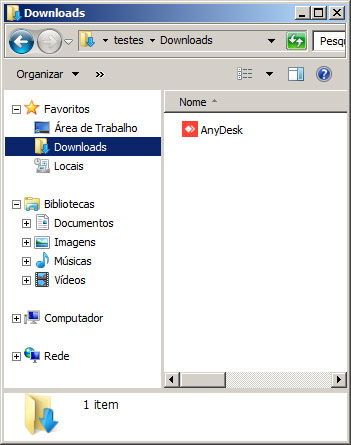
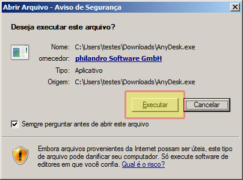
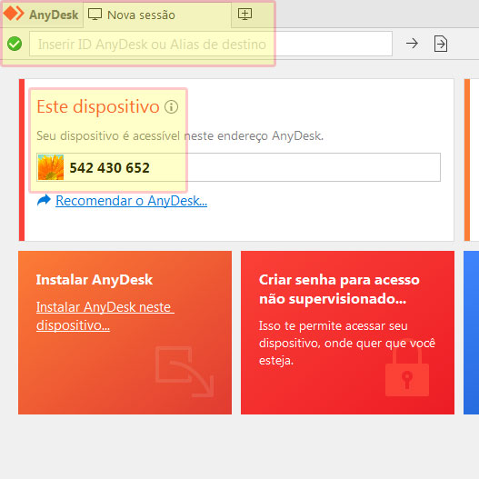
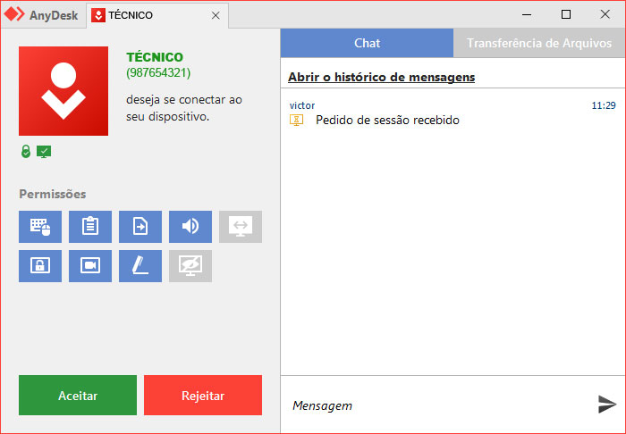

Pensando em você, nós executamos serviços com transparência, qualidade e agilidade.
Abaixo, você conhece um pouco mais sobre nossas principais atividades.
Ao longo do tempo, devido ao uso contínuo do computador, percebemos que as máquinas vão ficando mais lentas, começam a travar os programas, e em casos mais extremos chegam até na temida “tela azul”.
Se o seu computador está apresentando algum desses sintomas, então é um sinal de que ele está precisando ser formatado.
A formatação vai ajudar na eficiência de sua performance durante os trabalhos, dará uma nova “vida” para a máquina. Vai acabar com aqueles programas difíceis de desinstalar como barras de navegador e outros, vírus que estavam escondidos, etc.
Hoje em dia, instalar um programa, um aplicativo, um software qualquer que seja, já não é mais uma tarefa tão simples.
As empresas que desenvolvem esses softwares costumam "camuflar" outros serviços durante a instalação, tais como barras de navegação, barras de pesquisa, mudam sua página inicial da internet, e até instalam os temidos "otimizadores de pc" que na verdade só servem mesmo para atrapalhar a vida do usuário e a saúde do computador.
Levando isso em conta, nos atentamos em realizar uma instalação com todo cuidado para que ela seja completamente limpa, sem deixar passar nenhum tipo de "produto" camuflado na instalação do programa que você tanto deseja.
A manutenção preventiva garante uma maior vida útil e um melhor funcionamento dos computadores, evitando, por exemplo, a queima de componentes importantes, como processadores e discos rígidos. Deve ser realizada, independentemente de o computador apresentar problemas ou defeitos, pelo menos, uma vez por ano.
A manutenção preventiva em computadores consiste em desmontar o micro, realizar a sua limpeza geral e checar todos os seus componentes e contatos. A poeira, principal causa de problemas, por exemplo, interfere na dissipação do calor e na oxidação dos contatos, sejam eles intermitentes ou que levem o computador a parar de funcionar.
Não deu tempo de fazer uma manutenção preventiva e seu computador acabou com algum problema? Então é hora da manutenção corretiva.
A manutenção corretiva, comumente chamada de “reparo”, é a correção de um problema depois que o computador já quebrou ou parou de funcionar.
O objetivo dessa forma de manutenção é restaurar a operacionalidade do sistema, corrigindo o problema ou substituindo os componentes danificados.
Medidas corretivas comuns envolvem a remoção de vírus e malwares, a desinstalação de programas prejudiciais, a formatação e até a troca de componentes que podem ter sido danificados.
Quer dar aquele upgrade no seu computador? Melhorar a performance ou mesmo a parte estética? Realizamos a instalação de componentes e periféricos novos e seu computador ficará do jeito que você precisa.
Precisa apenas trocar algum componente ou algum periférico que já não está em bom estado ou até mesmo que tenha parado de funcionar? Também realizamos a troca desses itens com todo cuidado.
Trabalhamos com atendimento remoto de forma simples e rápida.
Caso esteja com um problema passível de solução à distância, você receberá todo nosso apoio e orientação para que possamos realizar uma conexão remota e solucionar o seu problema sem que você precise sair de sua casa ou escritório.
Para realizarmos um acesso remoto, é necessário estar utilizando o computador que receberá o atendimento e o mesmo deve estar conectado à internet.
Em seguida, basta seguir os passos abaixo:
Primeiro, clique no botão abaixo para fazer o download do AnyDesk.
Será através dele que iremos realizar uma conexão com o seu computador.
AnyDesk
Salve em um um local fácil de achar. Por exemplo, na área de trabalho ou na pasta 'Downloads'.
Agora, abra a pasta onde foi salvo o AnyDesk, e dê dois cliques sobre o arquivo baixado.
Em seguida, clique em 'Executar'.
Quando a tela do AnyDesk estiver aberta, clique na aba 'Nova Sessão' no canto superior esquerdo.
Em seguida, anote o número exibido em 'Este dispositivo'.
Agora, basta entrar em contato com o técnico por WhatsApp ou ligação telefônica.
Informe ao técnico o número anotado no passo anterior.
Assim que o técnico realizar a conexão, esta tela será exibida em seu computador.
Apenas clique em 'Aceitar' e aguarde o atendimento.
Agora você já está pronto(a) para receber atendimento remoto.
Sua mensagem foi enviada com sucesso.
Retornaremos o mais breve possível.